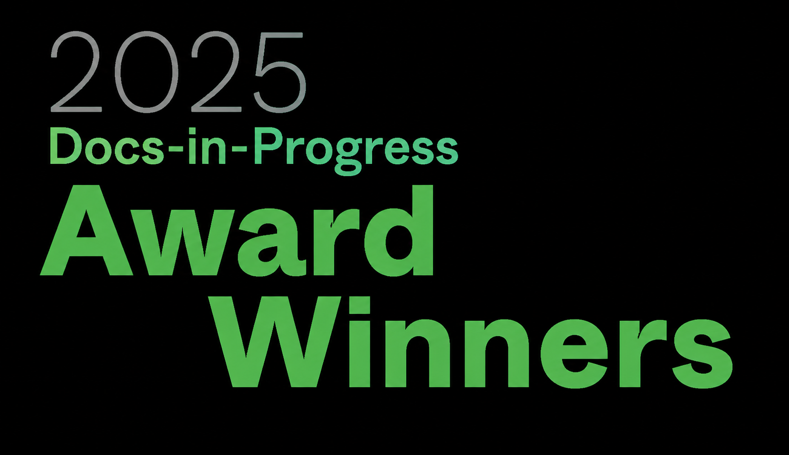
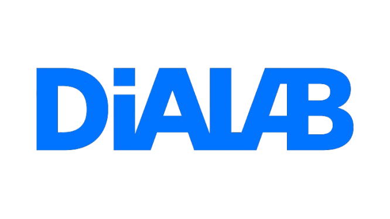
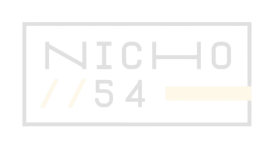
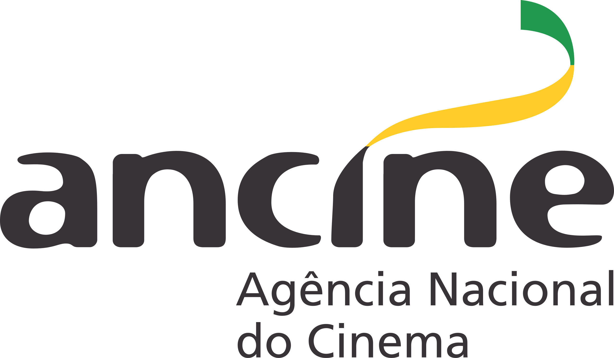
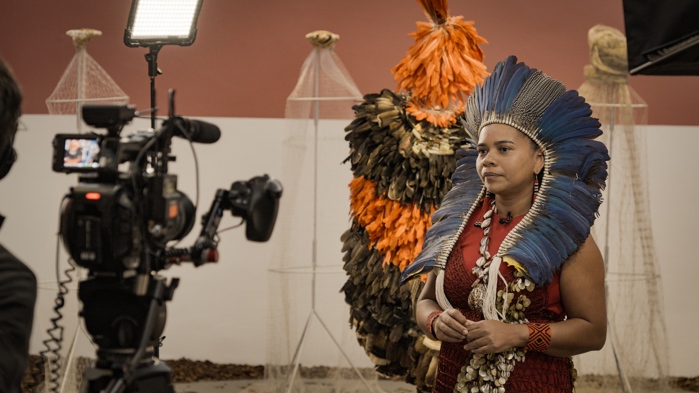
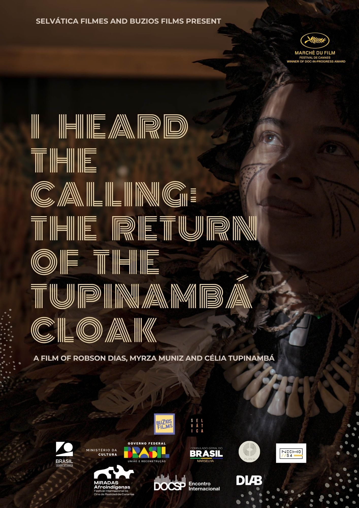

Feature documentary / Brazil–France
I Heard the Calling:
The Return of the Tupinambá Cloak
A daughter of a Tupinambá shaman travels across Europe to access the sacred feather cloaks of her people held in colonial museum collections. As the restitution of one cloak is announced, her journey unfolds into a broader confrontation with colonial history through art, memory and indigenous presence.
Project trajectory
Festivals, labs, markets and institutional support




Synopsis
The documentary follows the journey of a daughter of a Tupinambá shaman from Brazil on a spiritual mission through Europe. After becoming an anthropologist, she succeeds in being invited to access the eleven sacred feather cloaks of her people, kept for centuries in European museums. However, when the restitution of one cloak is announced, her journey becomes a thread of a bigger scope. From the Venice Biennale to the world’s leading restitution debates, the film discusses colonialism through art.
Project trajectory
- Winner of Docs-in-Progress Award — Marché du Film, Cannes 2025
- Official Selection — Brazilian Showcase, Cannes Docs 2025
- Winner of MiradasDoc Award — DOCSP 2025
- Selected for DOCSUR Pitching Lab — Miradas Afroindígenas Market 2025
- Participant — European Film Market, Berlinale 2024
- Selected for Nicho Laboratory
- Selected for Dialab Laboratory
Current Stage & Next Steps
The development phase of the project has been completed, and the film is now entering its final creative stage, with the editing process beginning through the viewing and organization of the material already filmed.
The project has received support from the FSA, strengthening its production structure and allowing the team to organize the next steps toward completion.
The current plan is to complete the film through the final stages of editing, post-production and festival strategy, with a projected premiere in the second half of 2027.

